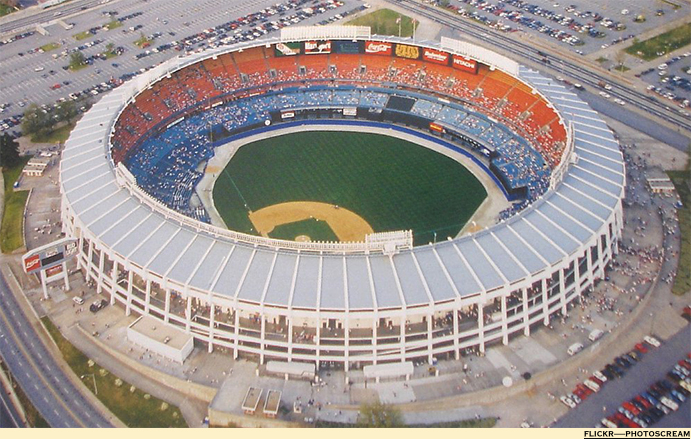
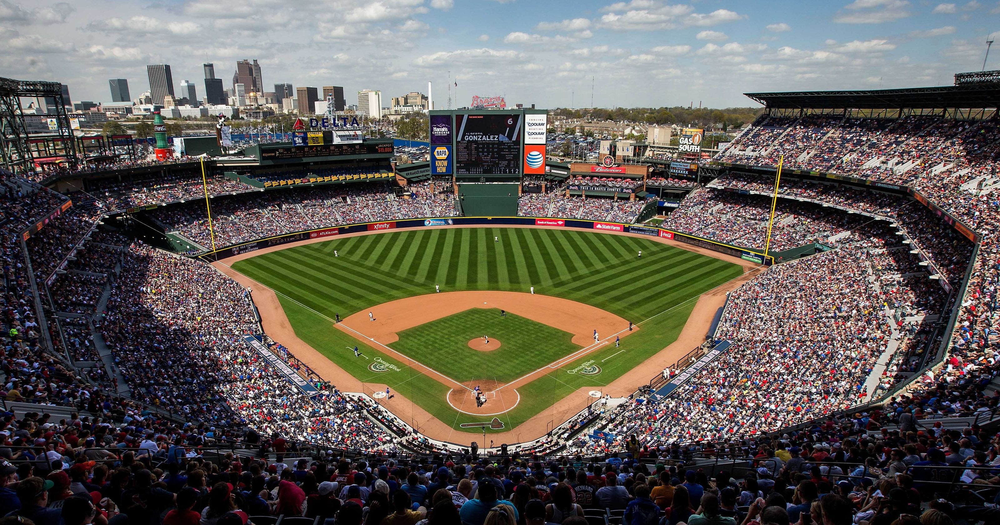
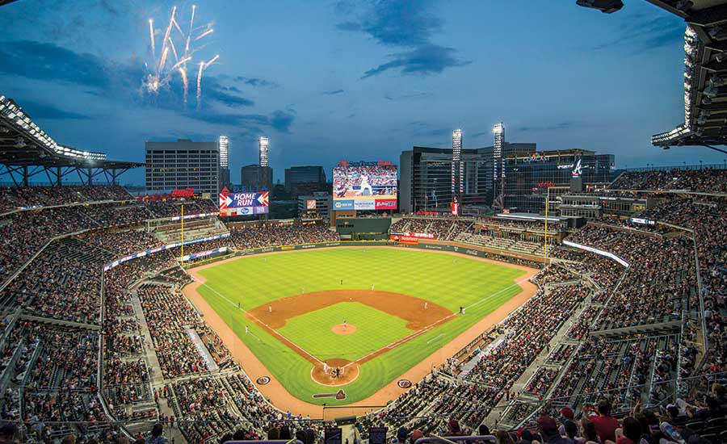

The Atlanta Braves are a professional baseball team that play in the MLB. The Braves were originally the Boston Braves and they were
founded in 1871. Then they relocated to become the Milwaukee Braves from 1953 until
1965. In 1966 the Atlanta Braves were established and have been here ever since. In the teams history,
the Braves have won 3 world series but the only one in Atlanta was in 1995 when the Braves beath the Yankees 4 to 2 in a 7 game series. The other two World Series Titles were in 1914, when they were the Boston Braves, and 1957, when they were the Milwaukee Braves.
The Atlanta Braves have played in three different baseball stadiums. The first was Atlanta-Fulton County Stadium and they played there from 1966-1996. Then they moved to Turner Field from 1997 until 2016. In 2017 Suntrust Park was built and it is where the Braves currently play.
Currently, the Braves along with 4 other teams are in the National League East. These teams are the Atlanta Braves,
Miami Marlins ,
New York Mets ,
Philadelphia Phillies
, and the
Washington Nationals.
2019 Opening Day Lineup
| Name | Postion |
| Ender Inciarte | CF
|
| Josh Donaldson | 3B
|
| Freddie Freeman | 1B
|
| Ronald Acuna Jr. | LF
|
| Nick Markakis | RF
|
| Ozzie Albies | 2B
|
| Brian McCann | C
|
| Dansby Swanson | SS
|
| Julio Tehran | P
|
Stadiums
| Atlanta-Fulton
County Stadium |
Turner
Field |
Suntrust
Park |
|  |
 |
 |